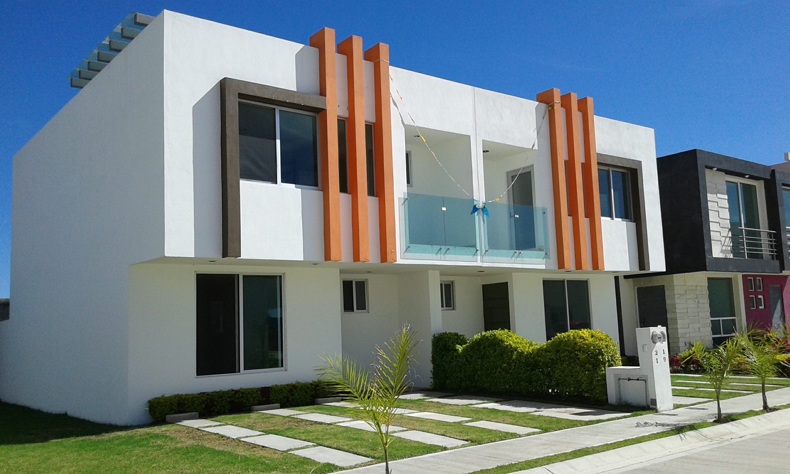

UN LUGAR POR DESCUBRIR
01 05FraccionamientoLa Providencia.
Casas, terrenos y espacios para imaginar nuevas historias.
01 / NUESTRA ESENCIA
Una forma distinta de imaginar el hogar.
Un sitio concebido para recorrer el fraccionamiento con calma: descubrir espacios, conocer opciones y encontrar la información que importa.
Una experiencia digital renovada donde la arquitectura y las imágenes ocupan el primer plano.
Conocer La Providencia02 / EXPLORA
Espacios con posibilidades.
Conoce las dos formas de explorar el proyecto.

03 / EL LUGAR
Más que un plano. Una perspectiva.
En Acámbaro, Guanajuato, el fraccionamiento se presenta como una propuesta para conocer opciones de vivienda y terrenos desde una mirada cercana y ordenada.
Descubre el contexto